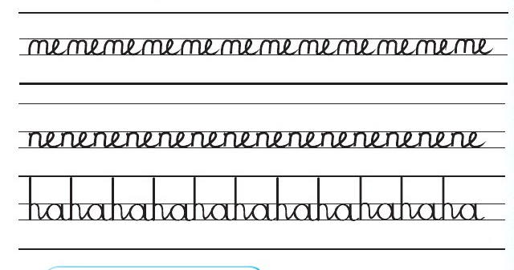

Nakili michoro ya silabi hizi.

Andika jibu kwa mkono katika sehemu hii.
Zoezi la tatu
Andika silabi hizi kwa mwandiko wa kuunga.
la, me, di, ka, ba, cha, pi, go, jo, sha, ndo,
kwi, nyi, wa, thu, ha, ni, to, da, ma, mwa,
nwe, dhu, ro, vi na ta
Andika jibu kwa mkono katika sehemu hii.